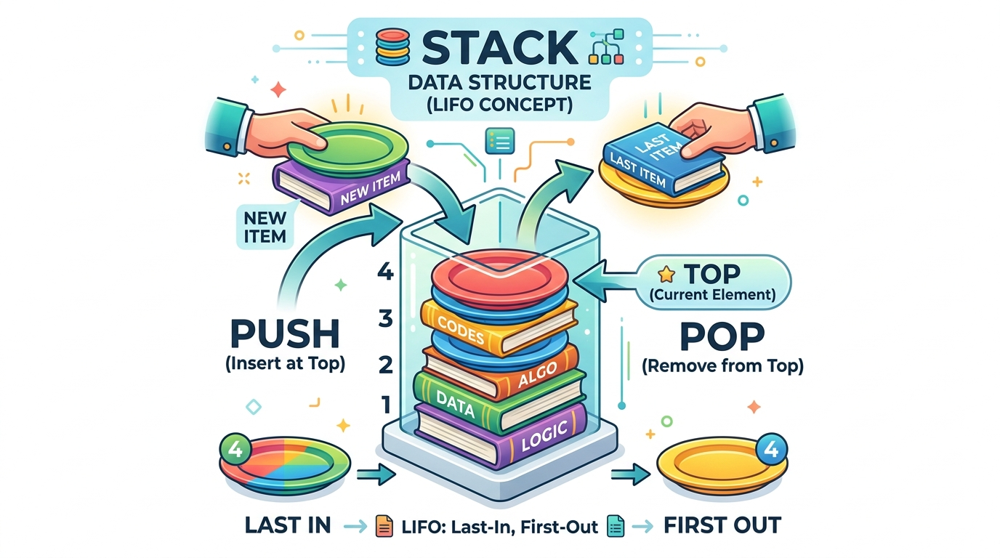
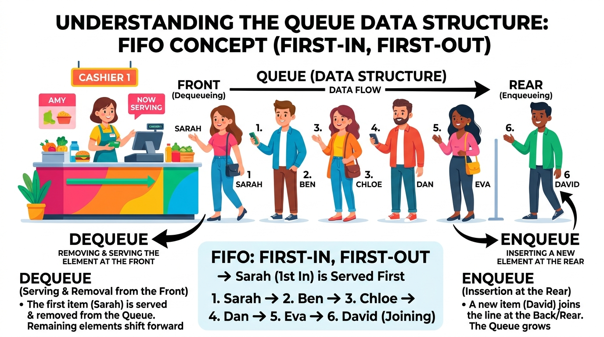

Computational Thinking:
Struktur Data
Stack & Queue
Pahami bagaimana sistem komputasi menyimpan, mengatur, dan mengolah data melalui fenomena nyata pelayanan kantin sekolah. Kembangkan kemampuan bernalar kritis melalui prinsip LIFO (Last In First Out) dan FIFO (First In First Out) berbasis model Problem Based Learning.
Simulasi Operasi Instan
Kekacauan di Kantin Sekolah: Bagaimana Logika Mengatasinya?
Saat bel istirahat 15 menit berbunyi, 200 siswa serentak memadati loket kantin. Tanpa tata kelola struktur data yang adil dan efisien, terjadi kericuhan antrean dan penumpukan piring makan.
Analisis Efek Sistem di Kantin
Siswa saling berebut di depan kasir. Siswa yang datang awal kerap diserobot, sementara tumpukan piring kotor dan piring bersih tercampur tidak teratur.
Queue vs Stack: Dua Pilar Logika Linear
Memahami perbedaan mendasar cara penyimpanan, penambahan, dan pengambilan elemen data untuk memilih struktur yang tepat bagi setiap persoalan komputasional.
Queue (Antrean)
Elemen yang pertama kali masuk akan menjadi elemen yang pertama kali keluar. Memiliki dua ujung operasional: penambahan di ujung belakang (Rear) dan pengambilan di ujung depan (Front).
Contoh Nyata: Antrean loket kasir, antrean cetak printer (spooler), playlist lagu antre.
Stack (Tumpukan)
Elemen yang terakhir kali masuk justru menjadi elemen yang pertama kali keluar. Seluruh proses penambahan dan pengambilan elemen hanya berlangsung pada satu pintu: puncak tumpukan (Top).
Contoh Nyata: Tumpukan piring bersih kantin, fitur Undo/Redo di Microsoft Word, tombol Back browser.
Tujuan Pembelajaran (Fase E SMA)
Dirumuskan berdasarkan Capaian Pembelajaran Informatika Fase E dengan formula ABCD (Audience, Behavior, Condition, Degree):
Analisis Perbedaan Prinsip LIFO & FIFO Kognitif C4 - Analisis
Melalui pengamatan dan analisis studi kasus pelayanan kantin sekolah, peserta didik dapat menganalisis perbedaan prinsip kerja struktur data Stack (LIFO) dan Queue (FIFO) dengan tepat, sekurang-kurangnya 4 dari 5 pernyataan atau contoh kasus.
Praktik Operasi Simulasi Interaktif Kognitif C3 - Aplikasi
Melalui penggunaan simulasi interaktif struktur data Stack dan Queue, peserta didik dapat mempraktikkan operasi dasar push, pop, peek, enqueue, dan dequeue serta menjelaskan perubahan elemen pada masing-masing struktur data dengan ketepatan minimal 80%.
Perancangan Solusi Algoritmik & LKPD Kognitif C6 - Kreasi
Melalui kegiatan diskusi dan penyelesaian LKPD secara berkelompok, peserta didik dapat merancang solusi algoritmik untuk mengatasi permasalahan pelayanan kantin sekolah dengan menerapkan konsep Stack dan Queue secara tepat berdasarkan minimal 3 kriteria penilaian: ketepatan konsep, urutan langkah penyelesaian, dan kejelasan solusi.
Siap Memecahkan Masalah Kantin dengan Berpikir Komputasional?
Mulai eksplorasi materi dari pemahaman awal, uji keterampilan logikamu di laboratorium game 4 level, dan susun karya terbaik bersama kelompok!
🎯 Tugas Individu: Eksplorasi 4 Level Bertingkat
Selesaikan 4 level tugas terfokus secara berurutan. Tingkat kesulitan meningkat bertahap dari pemahaman konsep, simulasi antrean kasir & piring, hingga tracing dan rekayasa urutan untuk alokasi 90 menit (2 JP).
Level 1: Konsep Dasar di Kantin Sekolah
C2 - Memahami KarakteristikMemuat skenario kasus...
Memuat pertanyaan...
📝 Evaluasi Akhir: Asesmen Sumatif (5 Menit)
Uji pemahaman komprehensifmu terhadap struktur data Stack dan Queue melalui 5 butir soal analisis HOTS berbasis kasus nyata kantin sekolah. Kriteria Ketercapaian Tujuan Pembelajaran (KKTP) minimal adalah 75.
💡 Pengayaan & Remedial
Fasilitas diferensiasi pembelajaran sesuai Standar Proses Kurikulum Merdeka untuk memperdalam konsep tingkat lanjut atau memantapkan kembali materi prasyarat.
1. Priority Queue (Antrean Berprioritas)
Pada kondisi nyata kantin sekolah, bagaimana jika ada guru yang sedang bertugas piket atau siswa yang sakit membutuhkan makanan darurat? Sistem Priority Queue menyisipkan data dengan prioritas lebih tinggi ke barisan paling depan tanpa melanggar prinsip keadilan sistemik.
Tantangan: Rancang aturan prioritas kantin berdasarkan tingkat urgensi pesanan!2. Circular Queue (Antrean Melingkar)
Dalam memori komputer dengan kapasitas terbatas (misalnya array 5 slot), operasi dequeue berulang kali meninggalkan ruang kosong di depan. Circular Queue menghubungkan ujung belakang kembali ke ujung depan membentuk lingkaran efisien sehingga tidak ada memori yang terbuang sia-sia.
Efisiensi Memori: Kompleksitas waktu tetap O(1) konstan!3. Call Stack pada Arsitektur Sistem Operasi
Setiap kali sebuah program memanggil fungsi (terutama fungsi rekursif), komputer mencatat titik kembali di dalam Call Stack. Saat fungsi selesai dieksekusi, alamat kembali di-pop dari Stack. Jika pemanggilan rekursif tanpa henti, akan terjadi galat fatal terkenal: Stack Overflow!
💡 Rangkuman Kunci Pemantapan Konsep:
- Queue = FIFO (First In First Out): Yang masuk duluan, keluar duluan. Memiliki 2 pintu: masuk dari REAR (belakang), keluar dari FRONT (depan). Contoh: antrean kasir kantin.
- Stack = LIFO (Last In First Out): Yang masuk terakhir, keluar duluan. Hanya memiliki 1 pintu: masuk dan keluar dari ujung TOP (atas). Contoh: tumpukan piring bersih dispenser kantin.
- Operasi Queue:
enqueue()untuk menambah antrean,dequeue()untuk melayani/mengeluarkan data terdepan. - Operasi Stack:
push()untuk menumpuk di atas,pop()untuk mengambil dari atas.
📝 Latihan Soal Pemantapan Remedial (Variatif)
Selesaikan 4 soal latihan interaktif di bawah ini untuk memantapkan konsep sebelum mencoba evaluasi ulang:
🪞 Refleksi Pembelajaran Individu
Sintaks 5 PBL: Analisis dan evaluasi pengalaman belajarmu hari ini. Luangkan waktu untuk menilai pemahaman diri dan merencanakan tindak lanjut komputasionalmu.
📖 Pusat Informasi, Panduan & Glosarium
Bantuan teknis, materi prasyarat, kamus istilah komputasional, referensi sumber belajar resmi, dan manajemen alokasi waktu pembelajaran 2 JP (90 Menit).
📊 Sistem Pembobotan Nilai & Aturan Pengerjaan Media
Penilaian digital pada website NalarQuest mengukur kompetensi pemecahan masalah komputasional dengan formula:
Nilai terbaik dari maksimal 3 kali percobaan.
Nilai terbaik kelompok dari maksimal 3 kali percobaan.
Asesmen sumatif 5 butir soal HOTS mandiri.
Poin tambahan eksplorasi praktikum (nilai akhir maks 100).
📢 Catatan Presentasi: Penilaian presentasi kelompok (bobot 10%) dilakukan secara manual oleh guru melalui rubrik penilaian guru di luar sistem digital ini.
Kompetensi Awal yang Diperlukan:
- Memahami konsep masukan (input), pemrosesan (process), dan keluaran (output) pada sistem komputasi.
- Memahami logika urutan langkah (sekuensial) dalam algoritma sederhana.
- Memahami 4 pilar dasar berpikir komputasional (Dekomposisi, Pengenalan Pola, Abstraksi, Algoritma).
Struktur data linear dengan prinsip akses satu pintu (TOP) berbasis LIFO.
Struktur data linear dengan dua pintu akses (REAR masuk, FRONT keluar) berbasis FIFO.
Last In, First Out (Yang terakhir masuk akan keluar pertama kali).
First In, First Out (Yang pertama masuk akan keluar pertama kali).
Operasi dasar Stack: push menaruh elemen di TOP, pop mengambil elemen dari TOP.
Operasi dasar Queue: enqueue antre di REAR, dequeue melayani dari FRONT.
Operasi melihat elemen terdepan atau teratas tanpa mengeluarkannya.
Kondisi galat: Underflow saat mengambil dari wadah kosong; Overflow saat menambah ke wadah penuh.
Q: Bagaimana cara mengunduh LKPD kelompok dalam format Word (.doc)?
A: Masuk ke menu Tugas Kelompok, lengkapi identitas tim dan jawaban analisis, lalu klik tombol 📄 Unduh Word (.doc) di bilah atas.
Q: Jika simulasi terasa lambat atau ingin mengulang dari awal?
A: Tekan tombol 🔄 Reset di sudut kanan atas header untuk mereset data sesi dengan aman.
⏱ Alur & Manajemen Waktu Pembelajaran PBL 2 JP (90 Menit Sesuai RPM UKIN):
| Tahap Pembelajaran | Waktu | Aktivitas Siswa & Fitur LarasLogika |
|---|---|---|
| 1. Kegiatan Awal | 8 Menit | Pengisian profil siswa, apersepsi diagnostik, dan pemahaman tujuan pembelajaran. |
| 2. Orientasi Masalah | 10 Menit | Mengamati stimulus kekacauan antrean kantin sekolah di Beranda & menjawab pertanyaan pemantik. |
| 3. Memahami Materi & Video | 12 Menit | Mempelajari konsep Stack (LIFO) & Queue (FIFO), menonton video animasi edukatif, dan mencoba mini simulasi. |
| 4. Penyelidikan Mandiri (Tugas Individu) | 15 Menit | Mengerjakan 4 level tugas inti bertingkat (konsep dasar, antrean kasir, tumpukan piring, dan tracing). |
| 5. Penyelidikan Kelompok (LKPD) | 20 Menit | Kolaborasi 6 anggota per kelompok, menganalisis 1 dari 2 studi kasus kantin, simulasi, dan mengisi LKPD. |
| 6. Presentasi & Tanggapan | 12 Menit | Penyajian hasil analisis solusi kelompok dan pemberian tanggapan reflektif antarkelompok. |
| 7. Evaluasi Sumatif & Refleksi | 10 Menit | Mengerjakan 5 soal evaluasi HOTS (5 Menit) dan mengisi lembar refleksi diri 3-2-1 (5 Menit). |
| 8. Penutup | 3 Menit | Rangkuman kesimpulan pembelajaran, umpan balik guru, dan tindak lanjut pengumpulan berkas. |
| TOTAL ALOKASI WAKTU | 90 Menit | 2 Jam Pelajaran (2 JP) Terintegrasi Penuh dengan RPM UKIN |
Tugas Studi Kasus Analisis Stack & Queue
Kerjakan tugas bersama kelompokmu. Masukkan nama kelompok dan anggota, diskusikan satu studi kasus yang tersedia pada media, amati simulasinya, jawab pertanyaan analisis HOTS, dan lengkapi lembar kesimpulan komputasional kelompok!
Identitas Kelompok & Anggota
Masukkan nama kelompok, kelas, dan nama anggota beserta perannya, lalu klik Simpan.
Pilih Studi Kasus Nyata
Klik salah satu kartu kasus di bawah untuk memilih masalah nyata yang akan dianalisis:
Lembar Analisis & Kesimpulan Kelompok
Diskusikan bersama anggota tim dan rumuskan rekomendasi serta kesimpulan komputasional terbaik:
🌱 Pemahaman Awal: Computational Thinking & Struktur Data
Sebelum menyelami struktur data Stack dan Queue secara mendalam, pahami terlebih dahulu cara berpikir komputasional dalam memecah persoalan dan alasan mendasar mengapa komputer memerlukan struktur penyimpanan data yang teratur.
🧩 4 Pilar Computational Thinking dalam Kehidupan Nyata
Berpikir Komputasional (Computational Thinking) adalah metode berpikir untuk menyelesaikan persoalan dengan merumuskan masalah dan solusinya secara terstruktur agar dapat dijalankan secara efektif baik oleh manusia maupun komputer.
1. Dekomposisi
Memecah persoalan besar dan rumit menjadi bagian-bagian kecil yang lebih sederhana dan terfokus untuk diselesaikan.
2. Pengenalan Pola
Melihat kesamaan karakteristik, keteraturan urutan, atau tren dari proses yang berlangsung secara berulang.
3. Abstraksi
Menyaring informasi penting yang esensial dan mengabaikan detail-detail yang tidak memengaruhi jalannya sistem.
4. Perancangan Algoritma
Menyusun rangkaian langkah atau aturan logis terstruktur dari awal hingga akhir guna mencapai solusi secara konsisten.
💾 Mengapa Komputer Membutuhkan Struktur Data?
Bayangkan jika perpustakaan menaruh ribuan buku berserakan secara acak di lantai. Tentu pembaca akan sangat kesulitan dan membuang banyak waktu untuk mencari satu buku saja! Hal serupa terjadi pada memori komputer: jika jutaan data disimpan tanpa pola, program akan menjadi lambat dan rentan eror.
Struktur Data adalah tata cara pengorganisasian, penyimpanan, dan pengelolaan data di dalam memori komputer sehingga data tersebut dapat diakses, ditambah, diubah, maupun dihapus secara efisien dan tepat sesuai tujuan program.
Elemen data disusun berurutan secara garis lurus satu demi satu. Setiap data memiliki urutan sebelum dan sesudahnya.
Contoh: Array, Stack (Tumpukan), dan Queue (Antrean).
Elemen data disusun secara bertingkat (hierarki) atau jaringan bercabang banyak.
Contoh: Tree (Pohon silsilah/folder file) dan Graph (Jaringan rute penerbangan/peta jalan).
🌉 Dua Prinsip Utama yang Akan Kita Pelajari
Pada materi Informatika Fase E ini, kita akan fokus mendalami dua struktur data linear yang fundamental:
📚 Stack (Tumpukan)
LIFOLast In, First Out: Elemen yang terakhir kali masuk adalah elemen yang pertama kali diambil. Hanya memiliki satu ujung aktif (puncak tumpukan / TOP).
👥 Queue (Antrean)
FIFOFirst In, First Out: Elemen yang pertama kali tiba akan pertama kali dilayani. Memiliki dua ujung: penambahan di REAR (belakang) dan pengeluaran di FRONT (depan).
✍️ Mini Cek Kesiapan Belajar (Diagnostik Cepat)
Uji Pemahaman PrasyaratUji pemahaman awalanmu dengan menjawab pertanyaan berikut sebelum masuk ke materi inti:
Jika seorang kasir ingin melayani pembeli secara adil tanpa ada yang diserobot, prinsip komputasi apa yang harus diterapkan dan apa nama struktur datanya?
1. Stack (Tumpukan)
Pelajari konsep struktur data tumpukan, eksplorasi diagram visual yang jelas, uji coba interaktif, dan kuis pemahaman tanpa rasa padat:
Simulasi Visual: Prinsip Kerja Stack pada Tumpukan Piring Saji Kantin
Tonton animasi interaktif berikut untuk melihat bagaimana petugas kantin menaruh piring saji dari atas tumpukan (push) dan siswa mengambil piring dari posisi paling atas (pop). Piring yang terakhir kali ditaruh menjadi yang pertama diambil (Last In, First Out).
Stack (Tumpukan) adalah cara mengorganisasi data/benda di mana penambahan elemen baru dan pengambilan elemen lama hanya dapat dilakukan dari satu pintu/ujung yang sama, yaitu posisi paling atas (TOP). Berlaku prinsip mutlak LIFO (Last In, First Out): data yang masuk paling akhir justru menjadi yang pertama dikeluarkan.
📸 Infografis Konsep Struktur Data Stack (LIFO)
Visual Diagram Resmi
push() menaruh benda baru di posisi TOP, sedangkan pop() mengambil benda yang paling atas terlebih dahulu.
⚙️ 4 Operasi Dasar pada Struktur Data Stack:
📥 Menambah: push(item)
Meletakkan elemen data baru tepat di atas puncak tumpukan (TOP).
📤 Mengambil: pop()
Mengambil dan menghapus elemen dari puncak tumpukan (TOP).
👁 Mengintip: peek() / top()
Melihat nilai elemen puncak tanpa mengambil atau mengubah isi tumpukan.
🔍 Cek Status: isEmpty()
Memeriksa apakah tumpukan kosong sebelum operasi pengambilan data.
Kondisi Batas Kritis: Stack Overflow vs. Stack Underflow
Dalam perancangan algoritma dan pemodelan kantin, kapasitas memori penampung memiliki batasan fisik. Dua kondisi batas kritis berikut wajib diantisipasi agar sistem tidak mengalami kegagalan (crash/error):
1. Stack Overflow (Tumpukan Meluap)
Kapan terjadi? Terjadi saat operasi push() dipanggil untuk menambah data baru, padahal tumpukan sudah terisi penuh mencapai batas kapasitas memori maksimum.
Analogi Kantin: Dispenser piring saji kafetaria berkapasitas maksimal 5 piring. Jika petugas memaksakan menaruh piring ke-6, tumpukan akan meluap dan piring pecah berhamburan.
Pencegahan CT: Selalu cek apakah tumpukan sudah penuh dengan fungsi isFull() sebelum menjalankan push().
2. Stack Underflow (Tumpukan Kosong)
Kapan terjadi? Terjadi saat operasi pop() (mengambil) atau peek() (mengintip) dipanggil pada tumpukan yang sedang kosong (tidak ada elemen sama sekali).
Analogi Kantin: Siswa mencoba mengambil piring dari rak dispenser kafetaria padahal dispenser piring sedang kosong melompong.
Pencegahan CT: Selalu periksa apakah tumpukan kosong menggunakan fungsi logika isEmpty() sebelum melakukan operasi pop().
🍽 Laboratorium Mini: Tumpukan Piring Kafetaria
Simulasi LangsungAmati secara langsung bagaimana prinsip LIFO bekerja. Klik tombol + Tumpuk Piring (Push) untuk menambah piring baru ke posisi teratas, lalu klik - Ambil Piring (Pop) untuk mengambil piring yang paling baru ditumpuk!
📝 Kuis Pemahaman Cepat Materi Stack
3 Soal Konseptual Berpoin1. Fitur "Undo" (Ctrl+Z) pada Microsoft Word membatalkan pengetikan yang paling baru dilakukan terlebih dahulu. Fitur ini menerapkan prinsip...
2. Jika kamu melakukan operasi push('Buku A'), lalu push('Buku B'), lalu push('Buku C'), buku manakah yang berada di posisi puncak (TOP)?
3. Operasi Stack yang digunakan untuk melihat nilai elemen teratas tanpa menghapusnya dari tumpukan adalah...
3. Perbedaan Stack dan Queue
Tabel komparasi karakteristik, prinsip operasi, dan kata kunci pemecahan masalah komputasional
| Aspek | 📚 Stack (Tumpukan) | 👥 Queue (Antrean) |
|---|---|---|
| Prinsip | LIFO (masuk terakhir, keluar pertama) | FIFO (masuk pertama, keluar pertama) |
| Tempat Masuk | Atas (satu ujung) | Belakang |
| Tempat Keluar | Atas (ujung yang sama dengan tempat masuk) | Depan (berbeda dengan tempat masuk) |
| Operasi Dasar | Menambah di atas, mengambil dari atas, melihat teratas, memeriksa kosong | Masuk di belakang, keluar dari depan, melihat terdepan, memeriksa kosong |
| Contoh Sehari-hari | Tumpukan piring, tombol undo, tombol back | Antrean kantin, antrean loket, antrean printer |
| Kata Kunci Masalah | “membatalkan yang terakhir”, “kembali ke langkah sebelumnya” | “siapa datang lebih dulu dilayani lebih dulu”, “diproses sesuai urutan kedatangan” |
4. Contoh Menentukan Urutan Keluar
Data A, B, C dimasukkan berurutan ke dalam sistem:
💡 Data C yang masuk terakhir akan menjadi yang pertama keluar dari tumpukan.
💡 Data A yang pertama masuk ke antrean akan menjadi yang pertama keluar dilayani.
5. Cara Memilih Stack atau Queue
Empat pedoman sistematis untuk memilih struktur data yang tepat:
Tentukan Data Masuk
Tentukan data atau objek apa yang masuk ke dalam sistem.
Tentukan Urutan Keluar
Tentukan data mana yang harus keluar lebih dulu: yang terakhir masuk atau yang pertama masuk?
Pilih Struktur Data
Bila yang terakhir ➔ Stack (LIFO);
bila yang pertama ➔ Queue (FIFO).
Tuliskan Alasannya
Tulis alasannya dengan kata-kata sendiri secara jelas dan komputasional.
6. Berpikir Komputasional pada Stack/Queue
Penerapan 4 pilar Computational Thinking dalam menganalisis masalah:
Memecah masalah menjadi bagian “data masuk” dan “data keluar” agar alur kerja mudah dianalisis.
Mengidentifikasi urutan masuk-keluar yang berulang, apakah bersifat FIFO (Queue) atau LIFO (Stack).
Memfokuskan hanya pada aturan masuk-keluar yang penting, bukan bentuk fisik atau rupa bendanya.
Langkah-langkah yang runtut dan sistematis dalam menentukan urutan keluar elemen secara konsisten.
2. Queue (Antrean)
Pelajari konsep struktur data antrean, eksplorasi diagram visual yang jelas, uji coba interaktif, dan kuis pemahaman tanpa rasa padat:
Simulasi Visual: Prinsip Kerja Queue pada Pelayanan Kasir Kantin
Tonton animasi interaktif berikut untuk melihat bagaimana siswa yang datang lebih awal berada di posisi depan (Front) dan dilayani pertama kali saat kasir memproses pesanan (dequeue), sementara siswa baru bergabung di barisan paling belakang (Rear / enqueue) demi keadilan layanan (First In, First Out).
Queue (Antrean) adalah cara mengorganisasi data/benda yang masuk dari ujung belakang (REAR) dan keluar dari ujung depan (FRONT). Berlaku prinsip mutlak FIFO (First In, First Out): data atau orang yang masuk pertama kali akan dilayani dan keluar pertama kali.
📸 Infografis Konsep Struktur Data Queue (FIFO)
Visual Diagram Resmi
enqueue(), sedangkan elemen tertua yang berada di ujung depan (FRONT) diproses keluar melalui operasi dequeue().
⚙️ 4 Operasi Dasar pada Struktur Data Queue:
📥 Menambah: enqueue(item)
Menambahkan data atau elemen baru ke posisi paling belakang antrean (REAR).
📤 Mengambil: dequeue()
Mengambil dan menghapus data paling depan (FRONT) yang sudah selesai diproses.
👁 Mengintip: front() / peek()
Melihat nilai data yang ada di posisi paling depan tanpa mengeluarkannya.
🔍 Cek Status: isEmpty()
Memeriksa apakah antrean sedang kosong sebelum melakukan proses dequeue.
Kondisi Batas Kritis: Queue Overflow vs. Queue Underflow
Struktur data Queue juga memiliki ruang antrean (buffer memori) dengan batasan kuota tertentu. Antisipasi dua kondisi batas berikut sangat penting dalam rekayasa sistem antrean:
1. Queue Overflow (Antrean Penuh)
Kapan terjadi? Terjadi saat operasi enqueue() dipanggil untuk memasukkan elemen baru ke posisi REAR, namun ruang antrean sudah terisi maksimal.
Analogi Kantin: Jalur tali pembatas antrean kasir kantin hanya muat untuk 5 orang. Jika siswa ke-6 mencoba masuk, pintu antrean ditutup sementara (antrean penuh).
Pencegahan CT: Verifikasi kapasitas antrean menggunakan fungsi isFull() sebelum mengizinkan proses enqueue().
2. Queue Underflow (Antrean Kosong)
Kapan terjadi? Terjadi saat operasi dequeue() (melayani/mengeluarkan) atau front() dipanggil pada antrean yang sedang kosong tanpa pelanggan.
Analogi Kantin: Petugas kasir memanggil nomor antrean berikutnya padahal lorong antrean sedang kosong melompong (tidak ada siswa yang dilayani).
Pencegahan CT: Lakukan pengecekan status antrean menggunakan fungsi isEmpty() sebelum mengeksekusi operasi dequeue().
🎟 Laboratorium Mini: Antrean Tiket Bioskop
Simulasi LangsungAmati secara langsung bagaimana prinsip FIFO bekerja. Klik tombol + Tambah Orang (Enqueue) untuk menambah penonton baru yang mengantre di posisi REAR (Belakang), lalu klik - Layani Terdepan (Dequeue) untuk memproses penonton di posisi FRONT (Depan)!
📝 Kuis Pemahaman Cepat Materi Queue
3 Soal Konseptual Berpoin1. Di loket kasir supermarket, pelanggan yang datang pertama akan dilayani pertama kali. Struktur data yang mencerminkan sistem ini adalah...
2. Operasi untuk memasukkan elemen baru ke dalam antrean (di posisi paling belakang) dinamakan...
3. Dalam struktur data Queue, di posisi manakah elemen baru selalu ditambahkan?
3. Perbedaan Stack dan Queue
Tabel komparasi karakteristik, prinsip operasi, dan kata kunci pemecahan masalah komputasional
| Aspek | 📚 Stack (Tumpukan) | 👥 Queue (Antrean) |
|---|---|---|
| Prinsip | LIFO (masuk terakhir, keluar pertama) | FIFO (masuk pertama, keluar pertama) |
| Tempat Masuk | Atas (satu ujung) | Belakang |
| Tempat Keluar | Atas (ujung yang sama dengan tempat masuk) | Depan (berbeda dengan tempat masuk) |
| Operasi Dasar | Menambah di atas, mengambil dari atas, melihat teratas, memeriksa kosong | Masuk di belakang, keluar dari depan, melihat terdepan, memeriksa kosong |
| Contoh Sehari-hari | Tumpukan piring, tombol undo, tombol back | Antrean kantin, antrean loket, antrean printer |
| Kata Kunci Masalah | “membatalkan yang terakhir”, “kembali ke langkah sebelumnya” | “siapa datang lebih dulu dilayani lebih dulu”, “diproses sesuai urutan kedatangan” |
4. Contoh Menentukan Urutan Keluar
Data A, B, C dimasukkan berurutan ke dalam sistem:
💡 Data C yang masuk terakhir akan menjadi yang pertama keluar dari tumpukan.
💡 Data A yang pertama masuk ke antrean akan menjadi yang pertama keluar dilayani.
5. Cara Memilih Stack atau Queue
Empat pedoman sistematis untuk memilih struktur data yang tepat:
Tentukan Data Masuk
Tentukan data atau objek apa yang masuk ke dalam sistem.
Tentukan Urutan Keluar
Tentukan data mana yang harus keluar lebih dulu: yang terakhir masuk atau yang pertama masuk?
Pilih Struktur Data
Bila yang terakhir ➔ Stack (LIFO);
bila yang pertama ➔ Queue (FIFO).
Tuliskan Alasannya
Tulis alasannya dengan kata-kata sendiri secara jelas dan komputasional.
6. Berpikir Komputasional pada Stack/Queue
Penerapan 4 pilar Computational Thinking dalam menganalisis masalah:
Memecah masalah menjadi bagian “data masuk” dan “data keluar” agar alur kerja mudah dianalisis.
Mengidentifikasi urutan masuk-keluar yang berulang, apakah bersifat FIFO (Queue) atau LIFO (Stack).
Memfokuskan hanya pada aturan masuk-keluar yang penting, bukan bentuk fisik atau rupa bendanya.
Langkah-langkah yang runtut dan sistematis dalam menentukan urutan keluar elemen secara konsisten.
LEMBAR LAPORAN EVALUASI SISWA
Mata Pelajaran: Informatika (Struktur Data Stack & Queue)
Tingkat: SMA Kelas X (Fase E)
PETUALANGAN SELESAI!
Hasil Evaluasi Pembelajaran Struktur Data Siswa
ND = (I × 0,30) + (L × 0,35) + (E × 0,35) + B
* Penilaian presentasi kelompok (bobot 10%) dilakukan secara manual oleh guru melalui rubrik penilaian guru di luar media digital ini.
📊 Rincian Komponen Penilaian Pembelajaran (Sesuai RPM UKIN):
✓ Konsep yang Dikuasai:
⚠️ Perlu Dilatih Lagi:
Tanda Tangan Guru
( Guru Pengampu )Tanda Tangan Siswa
( Siswa )